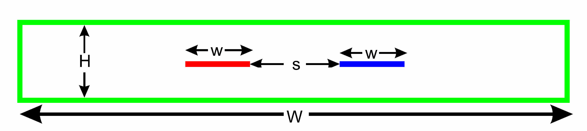

atlc(1) This is the main finite-difference calculation routine.create_bmp_for_circ_in_circ(1) For a circular conductor inside a circular conductor.create_bmp_for_circ_in_rect(1) For a circular conductor inside a rectangular onereadbin(1) For finding information on the binary files produced.
create_bmp_for_rect_in_rect(1) For quickly generating bitmaps of rectangular conductors inside rectangular conductors. create_bmp_for_rect_cen_in_rect(1) For quickly generating bitmaps of rectangular conductors placed centrally inside rectangular conductors.create_bmp_for_rect_in_circ(1) Currently the programme has not been finishedcreate_bmp_for_symmetrical_stripline(1) For quickly generating bitmaps of thin conductor between two wide groundplanes. Since exact analytical results exist, this is good for testing atlc create_bmp_for_coupler(1) For quickly generating bitmaps of directional couplers like this  design_coupler(1) The man page for design_coupler has not been written yet. Its use is quite complex and probably best understood with the use of the web pages, but a man page will be written.. Information on the correct arguments and options is available. Running design_coupler -e gives a complete example.